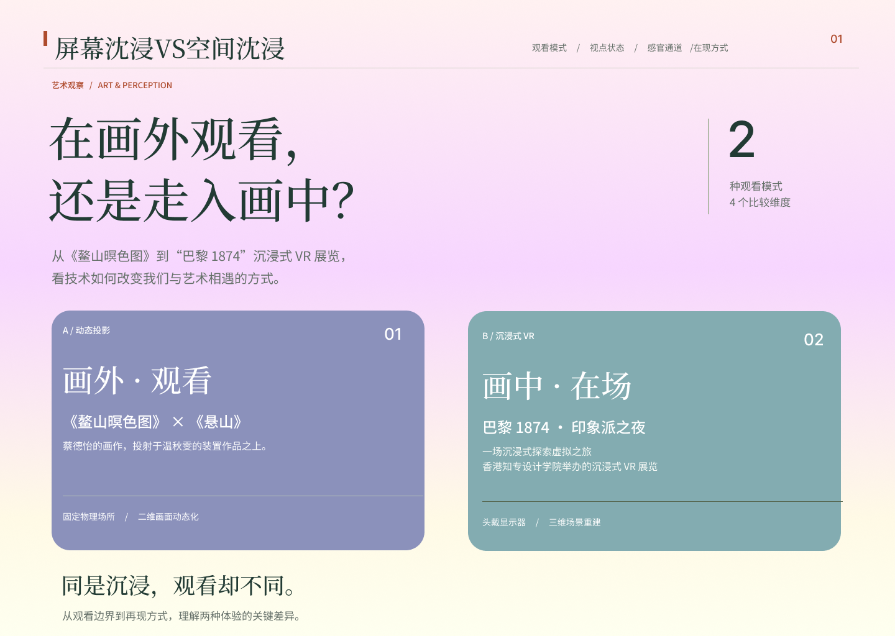

交互导览 · 6 页图像 / 4 个比较维度
在画外观看，
还是走入画中？
从《鳌山暝色图》到「巴黎 1874」沉浸式 VR 展览，看技术如何改变我们与艺术相遇的方式。用键盘、缩略图或下方对照表，自由探索两种沉浸体验的差异。

导览 · 2 种观看模式 / 4 个比较维度
在画外观看，还是走入画中？
同是沉浸，观看却不同。从观看边界到再现方式，理解两种体验的关键差异。
COMPARE / 交互对照
同是沉浸，观看却不同。
从观看边界到再现方式，逐一拆解两种体验的关键差异。